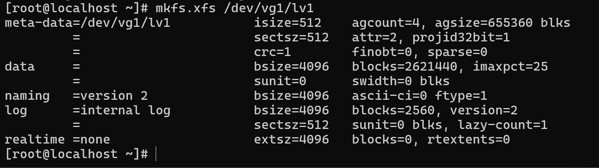

物理卷(PV)、逻辑卷(LV)、卷组(VG)管理
相关概念
逻辑卷是使用逻辑卷组管理(Logic Volume Manager)创建出来的设备，如果要了解逻辑卷，那么首先需要了解逻辑卷管理中的一些概念。
- 物理卷（Physical Volume,PV）：也就是物理磁盘分区，如果想要使用LVM来管理整个分区，可以使用fdisk将其id改成LVM可以识别的值，即8e
- 卷组（volume group，VG）：pv的集合
- 逻辑卷（logic volume，LV）：VG中画出来的一块逻辑磁盘
物理磁盘或者磁盘分区转换为物理卷，一个或多个物理卷聚集形成一个或多个卷组，而逻辑卷就是从某个卷组里面抽象出来的一块磁盘空间。具体架构如下：
为什么要使用逻辑卷
虽然对于物理磁盘，我们直接分区、格式化为文件系统之后就可以使用，但是逻辑卷有更多的好处：
- 如果需要大容量的磁盘，一般市场是无法满足需求的，但是逻辑卷可以将小磁盘合并为大逻辑磁盘
- 逻辑卷可以扩展和收缩磁盘，如果使用物理卷就无法完成
查看磁盘
1 | |
创建分区
通过上面的逻辑卷架构图，可以知道，如果要创建逻辑卷，需要先有物理磁盘或者磁盘分区，然后使用物理磁盘或磁盘分区创建物理卷，再使用物理卷创建卷组，最后使用卷组创建逻辑卷。
使用
fdisk -l命令查看现有硬盘信息、
可以看到有一个未分区的sdb盘
输入fdisk /dev/sdb进入分区工具，输入m进入菜单

输入n进行分盘
- 选择分区类型，直接按回车选择默认的 p
- 选择分区号，直接按回车选择默认的
- 选择起始扇区，直接按回车使用默认值
- 选择结束扇区 选择添加多少G比如说+5G，如果最后内存不够了可以直接点回车把剩余的全部添加
- 最后输入w保存
可以看到已经分好盘了
创建PV
CentOS7以上系统，在创建卷组时会自动创建物理卷，可以省略此步骤
1 | |
创建、扩容卷组
创建卷组相关命令有：
1 | |
扩容卷组的语法为
1 | |
创建、扩展逻辑卷
有了卷组，就可以创建逻辑卷(LV)了，创建逻辑卷相关命令有：
1 | |
如果要把卷组中所有的容量加入到逻辑卷中，使用如下命令：
`lvcreate -l 100%FREE -n LV_NAME VG_NAME
扩展逻辑卷: 逻辑卷的空间来源于卷组，当卷组有足够的空间时，才可以扩展逻辑卷。
1 | |
同样，如果将卷组中剩余的所有空间都扩展到逻辑卷中，使用如下命令：
1 | |
为逻辑卷创建文件系统/格式化逻辑卷
mkfs.xfs /dev/vg1/lv1

当你进行了逻辑卷扩展后，会发现文件系统的大小没有变，此时需要扩展文件系统xfs_growfs /mnt/test
挂载
创建挂载点
挂载点其实就是一个空目录，需要先创建它，用来作为访问这个新空间的“入口”。
创建一个名为 /data 的目录作为挂载点（也可以取其他名字，比如 /newdisk、/home/backup 等）。
1 | |
挂载逻辑卷
1 | |
设置开机自动挂载
上面的 mount 命令只是临时挂载，当重启虚拟机后，这个挂载会失效，需要手动再挂载一次。了让它永久生效，必须将挂载信息写入到 /etc/fstab 文件中。
获取逻辑卷的 UUID
1 | |
编辑 /etc/fstab 文件
首先备份一下这个文件cp /etc/fstab /etc/fstab.bak
然后编辑文件
1 | |
执行 mount -a 命令来测试您的 /etc/fstab 配置是否正确。如果没有任何报错，就说明配置无误。